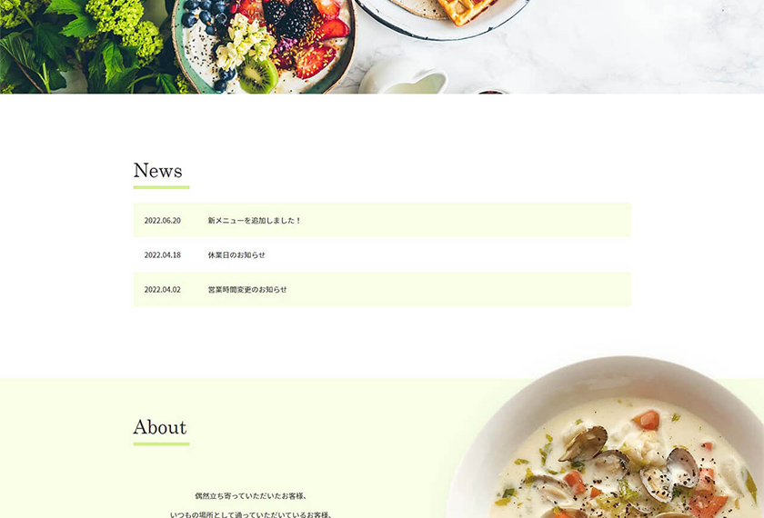

Webデザイン・コーディング
ナチュラルで高級な雰囲気を持つ、レストランのWebサイトです。
お店のイメージカラーが自然の緑のため、Webサイトのカラーも目に優しいパステルカラーの緑にしました。
Aboutの料理の切り抜き写真を配置することで、実際の料理のイメージをしやすくなるようにしたり、Floorで店内の写真を大きく掲載することで、訪問していただくお客様に、お店の雰囲気をわかりやすく伝える効果を狙っています。
※架空の企業のWebサイトです。
担当領域：設計、デザイン、コーディング
制作ツール：Photoshop, VSCode
制作時間：7時間